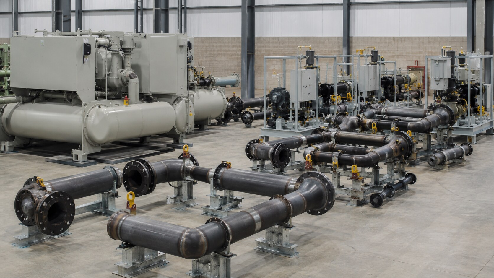
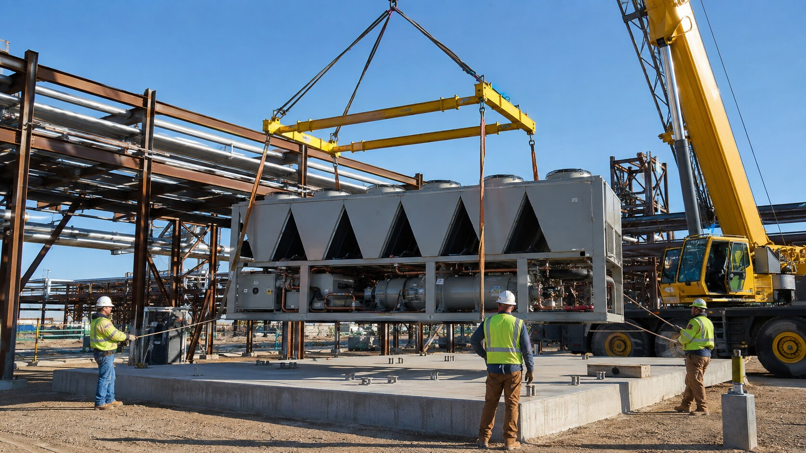
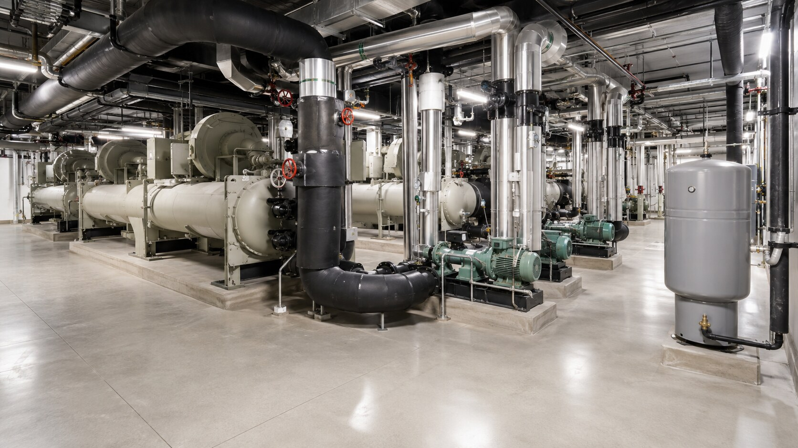

Define
Confirm performance needs, operating limits, scope, budget, work phases, and schedule.
One coordinated project team
We help owners and builders coordinate system planning, procurement, fabrication, installation, testing, startup, and commissioning from the beginning.

Vertically integrated delivery
Traditional project delivery can divide cooling equipment, piping, controls, startup, and commissioning among separate scopes. Unresolved handoffs create schedule and performance risk.
Our design-assist process connects early decisions to equipment orders, shop fabrication, field access, testing, startup, and turnover. Owners and builders get clearer responsibility at each milestone.


Project sequence
Confirm performance needs, operating limits, scope, budget, work phases, and schedule.
Coordinate equipment, piping, controls, electrical connections, access, supports, testing, and commissioning.
Manage equipment, specialties, material lead times, submittals, releases, and delivery sequencing.
Build identified piping packages in a controlled shop environment while site work and logistics advance.
Set equipment, install piping, complete tie-ins and testing, and resolve field issues as one team.
Complete startup readiness, manufacturer startup, functional support, documentation, training, and turnover.
Execution priorities
One shared project sequence
✓Earlier review of how the work will be built
✓Coordinated equipment and material releases
✓Shop fabrication aligned to field access
✓Single turnover and commissioning path
✓Faster resolution of technical issues
✓Bring us in early
We can align equipment lead times, material releases, shop fabrication, site logistics, installation, testing, and commissioning in one delivery plan.
Start the conversation →